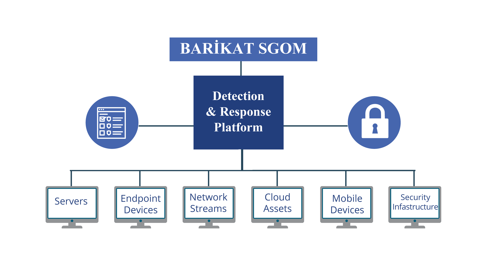

MxDR Hizmeti

DEDSEC MxDR servisi, tespit ve müdahale altyapısında kullanılan ürünlerin entegrasyonunu yaparak oluşan alarmların zenginleştirilmesi, hızlı tehdit tespit ve müdahale sunmaktadır. Bu servis ile operasyonel verimlilik, uyumluluk, siber risklerin azaltılıp, siber dayanıklılığın arttırılması ve daha iyi yönetilebilirlik gibi önemli faydalar hedefleyen bir Siber Güvenlik Operasyonları Merkezi (SGOM) operasyonları sağlanmaktadır.
DEDSEC MxDR Bileşenleri
DEDSEC MxDR Hızlı Bir Bakış
EDR (Endpoint Detection and Response)
EDR çözümü, ajanının konumlandığı tüm cihazlardan topladığı, ilişkilendirdiği ve analiz ettiği uç nokta verileriyle çalışarak şüpheli davranışları uç nokta düzeyinde tespit eder.
XDR (eXtended Detection and Response)
XDR, e-posta, uç noktalar, sunucular, bulut ortamları ve yerel ağ gibi gibi birden çok güvenlik katmanından verileri otomatik olarak toplar ve analiz eder.
NDR (Network Detection and Response)
NDR çözümleri, ağı bilinen/bilinmeyen tehditler ve şüpheli etkinliklere karşı araştırır, ağınızdan gelen trafiği sürekli olarak analiz eder ve ağdaki anormal trafiği tespit eder.
SOAR (Security Orchestration, Automation, and Response)
Entegre olduğu ürünler arasında orkestrasyonu sağlayarak sahip olduğu otomasyon yetenekleri risk azaltma ve engellemede otomatik müdahaleyi, tehditin uçtan uca yönetimini sağlar.
DEDSEC MxDR ile Neler Sunuyoruz?
Daha Hızlı Tehdit Tespit Süresi
MxDR servisi ile entegrasyonu ve orkestrasyonu yapılan ürünler, ağ, endpoint ve bulut ortamlarını tehdit eden güvenlik risklerini tespit edip izleyebilen platformlardır. MxDR servisi altyapısında kullanılan PaloAlto XSOAR orkestrasyonu sayesinde birbirleri ile entegre olan bu ürün aileleri ile söz konusu tehditlere hızla yanıt verme yeteneği artar. Siber saldırıları daha hızlı durdurmayı ve zararı sınırlamayı mümkün kılar.
Veri Paylaşımı ve Koordinasyon
MxDR servisi altyapısında kullanılan PaloAlto XSOAR, farklı güvenlik kaynaklarından gelen verileri bir araya getirir ve otomasyona tabi tutar. MxDR servisi ve beraberindeki entegrasyonlar sayesinde ürünlerden gelen veriler otomatik olarak birbirlieri arasında SOAR üzerinde paylaşılır ve güvenlik olaylarını anlamlandırabilmek için kullanılır. Bu sayede, güvenlik analistlerine bağlamsal bir zeminde alarm incelemesi yeteneğini kazandırır.
Otomasyon Yetenekleri
MxDR servisi altyapısında kullanılan PaloAlto XSOAR, güvenlik olaylarını otomatikleştirmek için geniş bir yelpaze sunar. XDR/EDR/NDR ürünlerinden gelen veriler ile entegre edildiğinde, otomasyon daha da güçlenir ve tehdit tespiti ve yanıt süreçleri hızlandırılır.
Kapsamlı Tehdit Görünürlüğü
MxDR servisi ve beraberindeki entegrasyonlar ağ, uç nokta ve bulut ortamlarında geniş bir tehdit görünürlüğü sağlar. Bu görünürlük otomasyon ve orkestrasyon yetenekleri ile birleştiğinde, organizasyonlar tüm bu alanlardaki tehditleri daha iyi izleyebilir ve analiz edebilir.
Tehdit İzleme ve Analiz
MxDR servisi ve beraberindeki entegrasyonlar, gelişmiş tehdit analitikleri ve tehdit istihbaratını beraberinde sunar. XSOAR ile entegre edildiğinde, bu analizler otomatikleştirilebilir ve güvenlik analistlerine daha fazla zaman kazandırarak olay incelemede siber güvenlik bakış açısının zenginleşmesine katkıda bulunur.
DEDSEC MxDR Kazanımları
Gelişmiş Tehdit Koruma
Etkili ve hızlı bir şekilde kötü amaçlı yazılımlara ve tehditlere karşı koruma sağlar.
Operasyonel Verimlilik
Otomasyon ve veri paylaşımı sayesinde güvenlik ekiplerinin az zamanda daha fazla doğru analiz ile operasyonu azaltır.
Kapsamlı İzleme ve Analiz
Ayrıntılı ve bağlamsal tehdit izleme ve analiz yeteneği sunar.
Risk Azaltma
Hızlı tepki ve daha iyi tehdit görünürlüğüne sahiptir.